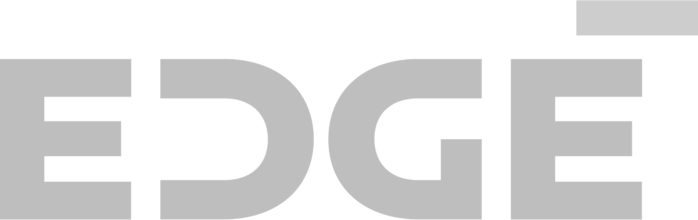
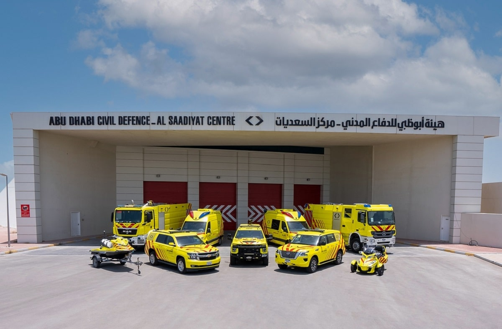
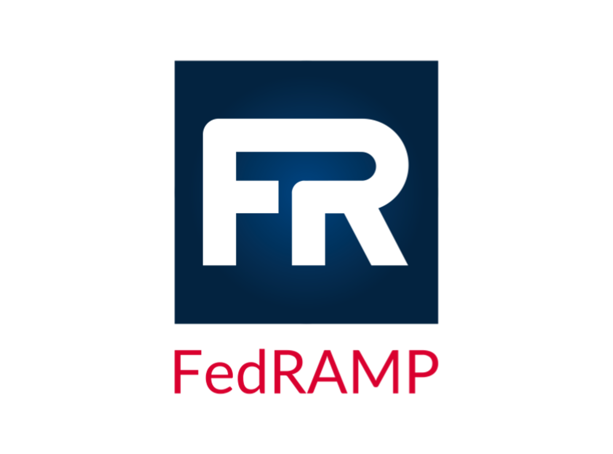
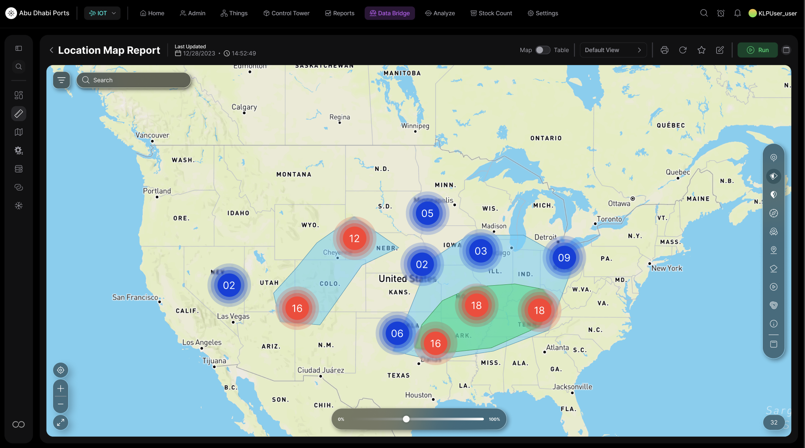
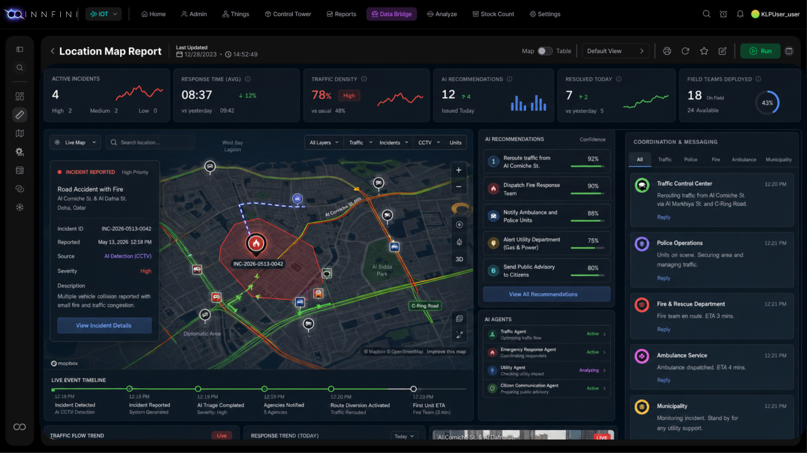

Active
SOC 2 Type II
Annual independent audit. Continuous monitoring of security, availability, and confidentiality controls.
AI at the core. Not bolted on. An agentic runtime that turns billions of IoT, RFID and vision signals into reasoning and action — across the operations the world runs on.


Select a customer to see how INNFini was deployed — the systems we unified, and the operational outcome delivered.
Every piece of firefighting equipment tagged with RFID and tracked across 10 stations — so crews know exactly what is on the truck and what is missing, verified automatically before and after every mission. Integrated with Abu Dhabi Civil Defense's ERP and readiness platform, so asset state, stock and mission readiness stay in step without manual reconciliation.

Deployed INNFini as the enterprise digital-transformation platform for the Saudi Ministry of Interior — converting MoI to fully paperless operations and unifying critical workflows: digital approvals, HR access & identity governance, evidence chain-of-custody, critical-asset management and real-time IoT facility telemetry.
Deployed INNFini as the integrated digital-operations platform for Ecovyst's US chemical plant — automating the entire manufacturing chain end-to-end, from raw-material intake through process operations to AI-driven quality release, with sensor-agnostic IoT, facility management and Vision AI inspection under one platform.
Deployed INNFini as the smart-city operations platform for Dubai Municipality — powering city-wide use cases under one unified IoT and operations fabric: smart irrigation, crowd management & CCTV, access control, sensor-driven waste management and environmental quality control.

From day one, Innfini is engineered for regulated and federal-grade operations. Audited continuously, mapped to recognized frameworks, deployable in sovereign and air-gapped environments.

Every other operations platform was built before the agentic AI era and is now retrofitting models around legacy data layers. Innfini was architected the other way around: the AI runtime is the platform. Sensors, integrations, and dashboards are all expressions of an agentic core that reasons, decides, and acts — continuously, across every signal your operation produces.
Platform-wide numbers across every Innfini deployment, live today.
Platform adoption year-over-year — deployments, integrations, and full-stack rollouts.
Innfini ships with a fleet of pre-built AI agents tuned for the work operations teams actually do — and an Agent Builder so your team can ship a new one in an afternoon.
Prebuilt AI agents connected to your sensors, systems, and SOPs.
Every agent on Innfini runs through the same five-layer runtime. Model-agnostic at the top. Sensor-aware at the bottom. Auditable end to end.
A visual builder for ops teams — no Python, no MLOps. Describe the goal, pick the tools, set the guardrails. The runtime handles planning, retries, fallbacks, logging and rollout.
Plain English. "Keep dock-door dwell under 22 minutes." The builder turns it into a measurable objective with success criteria.
Pick from 50+ connectors and any sensor source already on Innfini. Agent gets typed inputs and tool schemas auto-generated.
RBAC, approval thresholds, monetary caps, rate limits, escalation paths. Test in shadow-mode against last 30 days of live data.
Promote to production with one click. Every decision streams to the ledger. Roll back, A/B test, or fork at any time.
INNFINI's Decision Engine & ML layer fuses every event, rule and learned pattern in real time — then recommends or triggers the right action the moment it matters. Move from manual monitoring to intelligent, automated control.
Six stages. One continuous loop. Every event your operation produces gets ingested, understood, scored, decided on — and acted on — without leaving the platform.
RFID, IoT sensors, GPS, cameras, ERP, WMS, CRM, EAM, mobile apps, user activity. Ingested via API, MQTT, Kafka, DB & webhook.
Raw data normalized into meaningful events: asset entered zone, vehicle dwelling, temp spike, SLA approaching.
Business users define thresholds, escalation paths and SOPs — no code. Events evaluated against every active rule in <5ms.
Patterns, anomalies and predictions: failure forecasting, demand, dwell, congestion, incident probability, SLA risk.
The engine proposes the next-best-action — context-aware of location, asset, role, priority and history — with citations.
Closed-loop: create WO, alert, escalate, update ERP/WMS, log compliance, push to mobile. Outcome feeds back to the ledger.
Deterministic business logic where it matters. Machine learning where humans can't keep up. AI recommendations where context wins.
Forecast failures, dwell, congestion, demand, utilization and SLA risk. Models retrained continuously on your live operational ledger.
Unusual movements, unexpected sensor readings, off-pattern behavior, compliance gaps — surfaced the instant the signal goes off-baseline.
Every event ranked by severity, business impact, SLA pressure, location, asset criticality and role. The right thing first, every time.
Plain-language next-best-action with the why behind it. Citations to the underlying event, rule, model and historical outcome.
Trigger tasks, alerts, approvals, work orders and system updates. Closed-loop tracking from detection to resolution to learned outcome.
Every outcome — good, bad, ignored — feeds back. Decision quality improves on its own; rule suggestions surface as the system learns.
Reduce the time teams spend identifying, investigating and triaging operational issues.
Right context, right recommendation, right priority — surfaced before the operator asks.
Early-warning signs caught before they become major incidents, breaches or downtime.
Repetitive decision-making automated. Manual follow-up replaced by closed-loop execution.
From reactive operations to predictive, intelligent, automated control. The Decision Engine & ML layer empowers teams to detect issues earlier, respond faster, and continuously improve operational performance across every asset, person, workflow and enterprise system.
A structured intelligence layer that powers every other capability on the platform — from agent reasoning to root-cause analysis to audit-grade compliance.
Represent every asset, place, person, device, signal, workflow and incident as a structured object with attributes, status, owner and lifecycle stage.
Understand how every object is connected across locations, systems, teams and processes — and what depends on what when something changes.
Track every movement, reading, update, alert, approval and action over time. Replay any object's history at any granularity — second-by-second.
Know the current location, status, owner, condition and operational state of every object — and exactly what was true at any past moment.
Trace what happened before, during and after any event. Surface what triggered it, what was affected and what changed downstream — without leaving the platform.
Give AI agents, ML models and the Decision Engine the connected, typed, audit-grade context they need to recommend and automate with confidence.
Every asset, person, location, system and event — connected in one operational view, not scattered across silos.
Trace incidents, exceptions and movements end-to-end without manually checking five different systems.
AI agents and workflows fire on relationships, context and impact — not isolated data points.
A complete, immutable record of every event, relationship change, workflow action and system update.
The Object & Event Graph turns operational data from isolated records into connected intelligence — giving every decision, every workflow and every AI agent the context needed to act with confidence.
Screens from a live customer environment — Abu Dhabi Ports, running Innfini's IoT operations layer across terminals, yards, and field assets. Real dashboards, real data sources, real decisions.
Tabbed, role-customizable workspaces aggregate KPIs across LPN inventory, stock value, SKU mix, and store-level performance. Tile editor lets each user pin the eight metrics they own — Home, Admin, Things, Control Tower, Reports, Data Bridge, Analyze, Stock Count, Settings.

Switch between table and chart view, scrub historical date ranges, and add stores to comparison cohorts in one panel. Every chart is an entry point — click a value to load the underlying ledger of agent decisions that produced it.

Real-time heatmaps fuse RFID, vision, and GPS streams onto a geo-canvas. Density tuning, R/B channel blending, and overlay filters let operators flip from "all assets" to "high-value, last 24h, in transit" in seconds.

Composable Control Tower with electronic check-list statistics, totals at-a-glance, recent shipments table, and LPN-in inventory geomap — every widget bound to live data sources and refreshable on demand.

Weighted clusters reveal where inventory and movement are concentrated, while polygon overlays surface SLA-tinted regions: green where on-pace, red where exception. Time-scrub plays back the last 24 hours.

Pick a chart template, bind a data source, choose a palette, name the widget — and see it render against live operational data in the same pane. Ship a custom Control Tower in minutes, not weeks.

Drop a geofence on the map, attach an indoor diagram, set the color, code, and type — and the platform starts emitting events the moment a tagged asset enters or leaves. Used for yard cells, terminal apron, hospital wings, smart-city districts.
For utilities, ports, airports, energy assets, public-safety operators and national infrastructure: Innovent's command-and-control suite is the first agentic operating layer for mission-critical environments — one operating picture, every sensor feed, and AI agents that take the routine load off human operators.

Fuse RFID, CCTV, SCADA, ERP and third-party feeds into a single live state. Tag, geofence, drill in, take action — without leaving the console.
Agents handle the routine 80% — auto-dispatch maintenance, reroute pallets, lock zones, notify responders — and escalate only what needs a human in the loop.
Built for regulated and federal-grade environments. Decision audit trails, role-based controls, US-data-residency options, and a deploy posture compatible with FedRAMP, IL2/IL4 paths.
From multi-agency operating pictures to neighborhood-level services, Innovent's Smart City & Smart Community platform is the first AI-native civic operating system — unifying mobility, utilities, public safety, environmental, and community data into a single intelligent fabric that agents can reason over and citizens can interact with.
Real-time transit orchestration, traffic AI, EV-charging network, and curbside management — keeping the city moving.
Grid-edge sensing, demand-response automation, water and waste optimization, microgrid coordination — a self-balancing utility layer.
Unified 911 + agency operating picture, agent-assisted dispatch, predictive deployment, transparent audit trail — faster response, accountable AI.
Citizen apps, neighborhood-level insights, social-service routing, equity dashboards — putting AI at the service of residents, not just operators.
Air-quality networks, emissions accounting, urban-heat monitoring, climate-resilience modeling — quantified at the block level.
Permit AI, inspections, code enforcement, asset management, multi-department workflow — one operating fabric for city government itself.
Goal-driven agents that reason over sensor state, take action in connected systems, and document every step in an audit log.
Real-time recognition for inventory, safety, anomaly detection, and high-throughput dock and yard operations.
Demand forecasting, equipment-failure prediction, and dwell-time optimization tuned to your operating model.
Ask the platform anything in plain English. Get answers grounded in live sensor data, with the citations to back them.
Connected-floor visibility, WIP tracking, predictive maintenance, OEE lift.
End-to-end tracking, yard management, dwell-time AI, exception handling.
Self-checkout, loss prevention, store-of-the-future, real-time stock visibility.
Asset & patient tracking, sterilization workflows, staff safety, compliance.
Field-asset tracking, lone-worker safety, environmental monitoring, downtime AI.
Base logistics, asset accountability, situational awareness, agent-assisted dispatch.
Multi-agency operating pictures, traffic / utilities orchestration, event response.
Ground-handling visibility, baggage & cargo tracking, ramp safety.
A 30-minute discovery call. We'll walk through your sites, sensors, and systems — and show you what an Innfini deployment looks like in your environment.